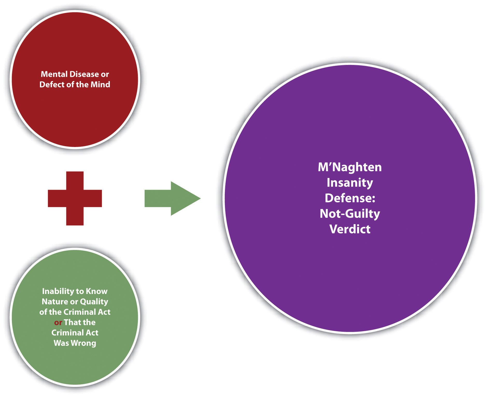
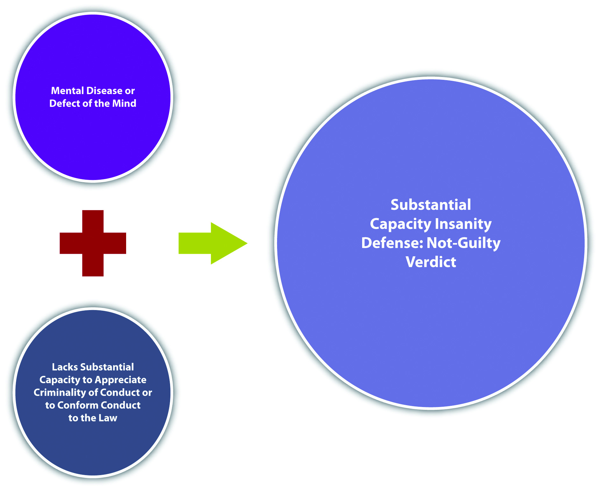
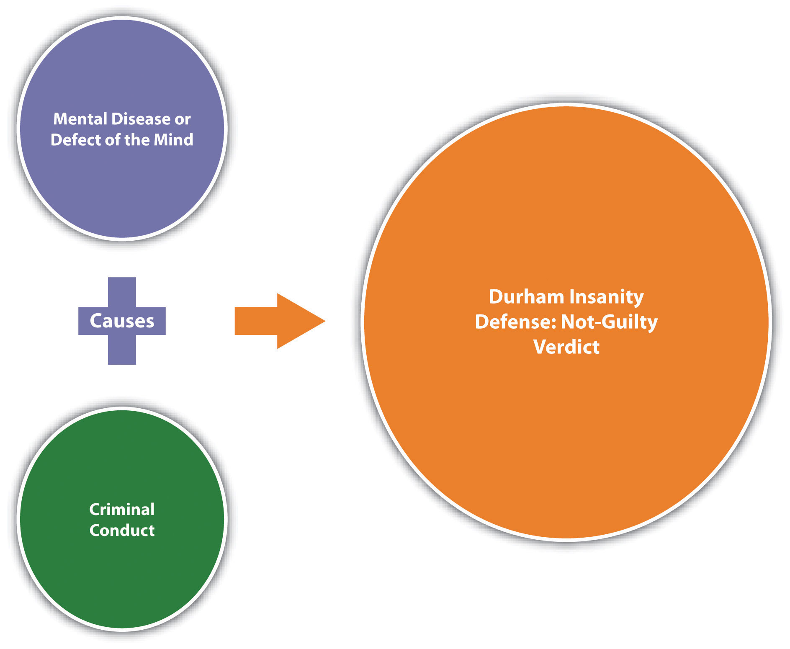
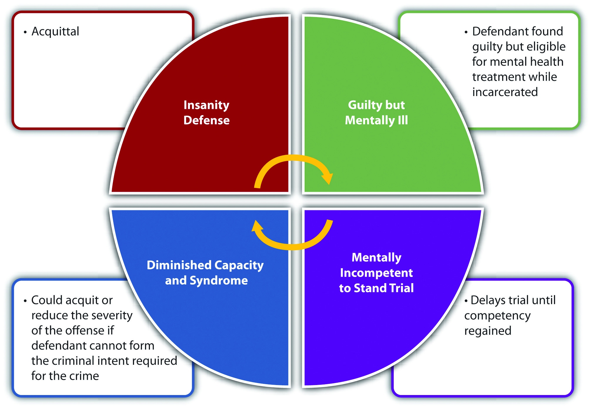
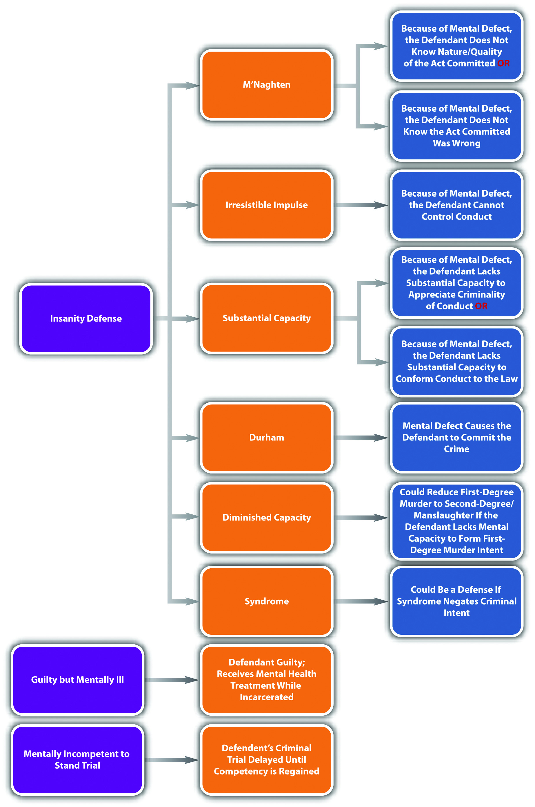
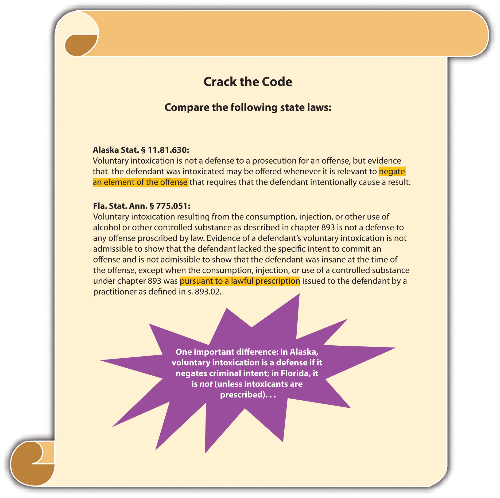
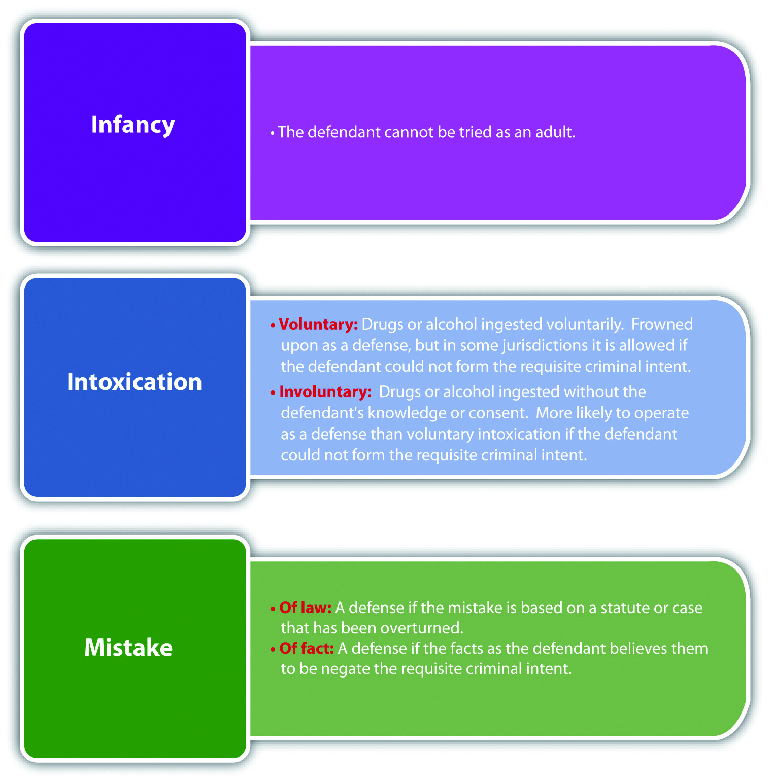
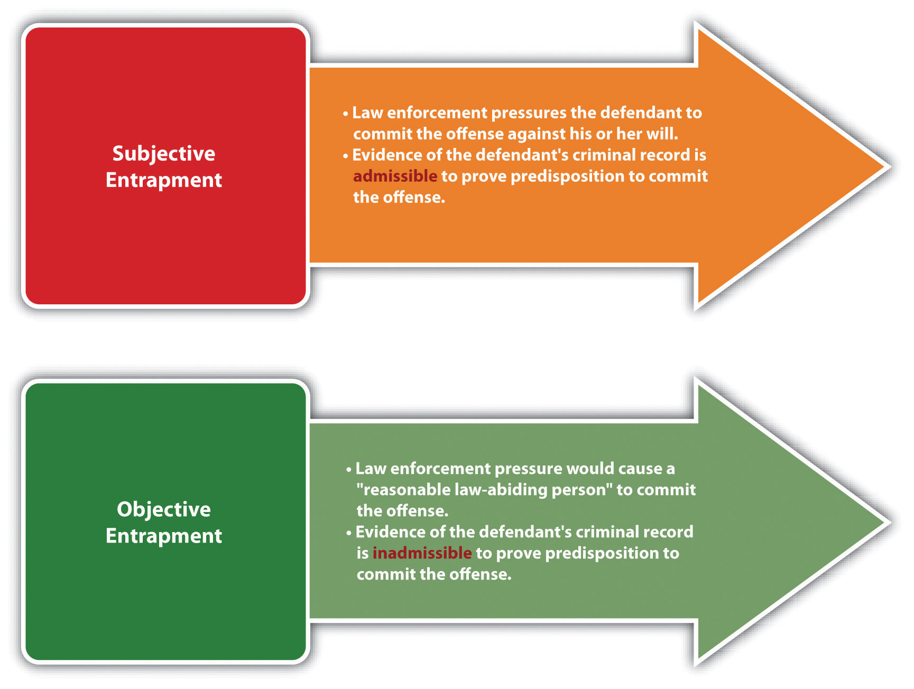
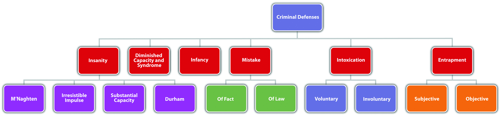

Source: Image courtesy of Tara Storm.
The use of drugs or controlled substances, dependence on drugs or controlled substances or voluntary intoxication shall not, as such, constitute a defense to a criminal charge…
Or. Rev. Stat. § 161.125(1), cited in Section 6.2.2 "Intoxication"
With the exception of alibi and the expiration of the statute of limitations, Chapter 5 "Criminal Defenses, Part 1" explored criminal defenses based on justification. This chapter reviews criminal defenses based on excuse, including the insanity defenseA defense that excuses a legally insane defendant’s criminal conduct.. Remember that defenses based on excuse focus on the defendant and claim that the defendant should be excused from criminal responsibility for his or her conduct under the circumstances.
Although controversial, most states and the federal government recognize an insanity defense.18 U.S.C. § 17, accessed November 28, 2010, http://www.law.cornell.edu/uscode/18/usc_sec_18_00000017----000-.html. Montana, Utah, Kansas, and Idaho are the only states that do not.Findlaw.com, “The Insanity Defense among the States,” findlaw.com website, accessed November 29, 2010, http://criminal.findlaw.com/crimes/more-criminal-topics/insanity-defense/the-insanity-defense-among-the-states.html. The insanity defense is the subject of much debate because it excuses even the most evil and abhorrent conduct, and in many jurisdictions, legal insanity functions as a perfect defense resulting in acquittal. However, the insanity defense is rarely used and hardly ever successful. This is generally because of the difficulty in proving legal insanity.
Many criminal defendants suffer from mental illness and can produce evidence of this illness such as psychiatric or layperson testimony. Often, mental disturbance is apparent from the defendant’s conduct under the circumstances. However, legal insanity differs from medical insanity and is generally much more difficult to establish. The rationale behind creating a different standard for legal insanity is the goal of a criminal prosecution discussed in Chapter 1 "Introduction to Criminal Law". Criminal prosecution should deter as well as incapacitate. While the purpose of a medical diagnosis is to eventually cure the defendant’s disorder, the purpose of criminal law is to punish the defendant. Thus the defendant’s conduct is not excused if the defendant or society can benefit from punishment.
The policy supporting the insanity defense is twofold. First, an insane defendant does not have control over his or her conduct. This is similar to a defendant who is hypnotized, or sleepwalking. Second, an insane defendant does not have the ability to form criminal intent. Without the ability to control conduct, or the understanding that conduct is evil or wrong by society’s standards, an insane defendant presumably will commit crimes again and again. Thus no deterrent effect is served by punishment, and treatment for the mental defect is the appropriate remedy.
Four variations of the insanity defense currently exist: M’Naghten, irresistible impulse, substantial capacity, and Durham.
The M’Naghten insanity defenseAn insanity defense that excuses criminal conduct when a mental defect or disease caused the defendant not to know the nature or quality of the criminal act, or that the act was wrong. Also called the right-wrong test., also called the right-wrong test, is the most common insanity defense in the United States. It is also the oldest and was created in England in 1843. The defense is named after Daniel M’Naghten. M’Naghten was under the paranoid delusion that the Prime Minister of England, Sir Robert Peel, was trying to kill him. When he tried to shoot Sir Peel from behind, he inadvertently shot Sir Peel’s Secretary, Edward Drummond, who thereafter died. M’Naghten was put on trial for murder and, to the shock of the nation, the jury found him not guilty by reason of insanity.Queen v. M’Naghten, 10 Clark & F.200, 2 Eng. Rep. 718 (H.L. 1843), accessed November 29, 2010, http://users.phhp.ufl.edu/rbauer/forensic_neuropsychology/mcnaghten.pdf. After a public outcry at this verdict, the British House of Lords developed a test for insanity that remains relatively intact today.
The M’Naghten insanity defense is cognitive and focuses on the defendant’s awareness, rather than the ability to control conduct. The defense requires two elements. First, the defendant must be suffering from a mental defect at the time he or she commits the criminal act. The mental defect can be called a “defect of reason” or a “disease of the mind,” depending on the jurisdiction.Iowa Code § 701.4, accessed November 30, 2010, http://coolice.legis.state.ia.us/cool-ice/default.asp?category=billinfo&service=iowacode&ga=83&input=701. Second, the trier of fact must find that because of the mental defect, the defendant did not know either the nature and quality of the criminal act or that the act was wrong.
The terms “defect of reason” and “disease of the mind” can be defined in different ways, but in general, the defendant must be cognitively impaired to the level of not knowing the nature and quality of the criminal act, or that the act is wrong. Some common examples of mental defects and diseases are psychosis, schizophrenia, and paranoia.
Jurisdictions vary as to the level of awareness the defendant must possess. Some jurisdictions use the term “know,” or “understand,”Cal. Penal Code § 25, accessed November 30, 2010, http://law.onecle.com/california/penal/25.html. while others use the term “appreciate.”Ala. Code § 13A-3-1, accessed November 30, 2010, http://law.onecle.com/alabama/criminal-code/13A-3-1.html. If know or understand is the standard, the trier of fact must ascertain a basic level of awareness under the attendant circumstances. If appreciate is the standard, the trier of fact must analyze the defendant’s emotional state, and evidence of the defendant’s character or personality may be relevant and admissible.
A defendant does not know the nature and quality of a criminal act if the defendant is completely oblivious to what he or she is doing. This is quite rare, so most defendants claiming insanity choose to assert that they did not know their act was wrong. However, jurisdictions differ as to the meaning of “wrong.” Some jurisdictions define wrong as “legally wrong,” meaning the defendant must be unaware that the act is against the law.State v. Crenshaw, 659 P.2d 488 (1983), accessed November 30, 2010, http://lawschool.courtroomview.com/acf_cases/8790-state-v-crenshaw. Others define wrong as “legally and morally wrong,” meaning the defendant must also be unaware that the act is condemned by society.State v. Skaggs, 586 P.2d 1279 (1978), accessed November 30, 2010, http://www.leagle.com/xmlResult.aspx?xmldoc=1978587120Ariz467_1470.xml&docbase=CSLWAR1-1950-1985. Generally, the only instance where the defendant must be “morally wrong,” standing alone, is when the defendant claims that the conduct was performed at the command of God, which is called the deific defenseThe defendant claims God commanded him or her to commit the crime..State v. Worlock, 569 A.2d 1314 (1990), accessed November 30, 2010, http://www.leagle.com/xmlResult.aspx?xmldoc=1990713117NJ596_1172.xml&docbase=CSLWAR2-1986-2006. Whether the standard is legally wrong or morally wrong, if there is any evidence of a cover-up or an attempt to hide or escape, it is apparent that the defendant knew the difference between right and wrong, defeating the claim of insanity under M’Naghten.
Susan wants to marry a single man, but he does not want the responsibility of caring for her children. Susan decides to kill her children. She drives her two sons, aged three and five, out to the lake. She puts the car in park, gets out, and then puts it in gear, watching as it drives into the water. Both of her sons drown. Later that day, Susan files a police report stating that a stranger kidnapped her children at gunpoint. While searching the area for the kidnapper, the police discover the children’s bodies and evidence indicating that Susan killed them.
Susan recants her kidnapping story and admits she killed her children. However, she claims she is not guilty by reason of insanity. Susan’s claim will probably not be successful if she killed her children in a jurisdiction that recognizes the M’Naghten insanity defense. Susan tried to mislead the police, demonstrating her awareness that she had done something wrong. Thus although Susan’s behavior appears mentally imbalanced, she clearly knew the difference between right and wrong, and her conduct is not excusable under M’Naghten’s rigid requirements.
Andrea, a diagnosed schizophrenic, drowns five of her young children in the bathtub. Andrea promptly phones 911 and tells the operator that her children are dead. The operator dispatches an emergency call to law enforcement. When law enforcement officers arrive at Andrea’s house, she informs them that she killed her children so that they could leave this earth and enter heaven.
Andrea thereafter claims she is not guilty for killing her children by reason of insanity. Andrea could be successful if the jurisdiction in which she killed her children recognizes the M’Naghten insanity defense. Andrea suffers from a mental defect, schizophrenia. In addition, there is no evidence indicating Andrea knew her conduct was wrong, such as an attempted escape, or cover-up. In fact, Andrea herself contacted law enforcement and immediately told them about her criminal acts. Thus both of the M’Naghten elements appear to be present, and Andrea’s conduct may be excusable under the circumstances.
Figure 6.1 M’Naghten Insanity Defense
Another variation of the insanity defense is the irresistible impulse defenseAn insanity defense that excuses criminal conduct when a mental defect or disease caused the defendant to lose the ability to control his or her conduct or conform his or her conduct to the law.. This defense has lost popularity over the years and is rejected by most of the states and the federal government.18 U.S.C. § 17, accessed November 28, 2010, http://www.law.cornell.edu/uscode/18/usc_sec_18_00000017----000-.html. In some cases, the irresistible impulse insanity defense is easier to prove than the M’Naghten insanity defense, resulting in the acquittal of more mentally disturbed defendants.
The irresistible impulse insanity defense generally supplements M’Naghten, so the focus is on the defendant’s awareness (cognitive) and the defendant’s will (ability to control conduct). In jurisdictions that recognize the irresistible impulse insanity defense, the first element is the same as M’Naghten; the defendant must suffer from a mental defect or disease of the mind. However, the second element adds the concept of volition, or free choice. If the defendant cannot control his or her conduct because of the mental defect or disease, the defendant’s conduct is excused even if the defendant understands that the conduct is wrong.State v. White, 270 P.2d 727 (1954), accessed November 30, 2010, http://scholar.google.com/scholar_case?case=15018626933471947897&hl=en&as_sdt=2&as_vis=1&oi=scholarr. This is a softer stance than M’Naghten, which does not exonerate a defendant who is aware conduct is wrong. The challenge for the trier of fact in an irresistible impulse jurisdiction is distinguishing between conduct that can be controlled and conduct that cannot.
Jolene, who has been diagnosed with paranoia, decides she must cut off all her sorority sisters’ hair because they are “out to get her.” She drives to the sorority house with a Taser and scissors in her backpack. Her plan is to subdue each sister with the stun gun and then hack off her hair. As she arrives at the house, she sees Agnes, one of her sorority sisters, trip and fall in the parking lot, ripping her cashmere sweater and scraping her chin. Feeling a stab of pity, Jolene ignores Agnes and walks hurriedly toward the building. As she enters, Ashley, another sorority sister, turns, scowls at Jolene, and barks, “What in the world are you wearing? You look like you just rolled out of bed!” Jolene pulls the stun gun out of her backpack and shoots Ashley. While Ashley is lying on the floor, Jolene takes out the scissors and cuts Ashley’s hair off at the scalp.
Jolene claims she is not guilty for assault and battery of Ashley by reason of insanity. If Jolene attacked Ashley in a jurisdiction that recognizes the irresistible impulse insanity defense, she probably will not be successful with her claim. Jolene has been diagnosed with paranoia, which is a mental defect or disease. However, Jolene seems aware that shooting someone with a stun gun and cutting off her hair is wrong because she spared Agnes based on pity. In addition, Jolene’s choice not to attack Agnes indicates she has control over her conduct. Thus Jolene is cognitive of the difference between right and wrong and has the will to suppress criminal behavior, defeating any claim of insanity under the irresistible impulse insanity defense.
Figure 6.2 Irresistible Impulse Insanity Defense

The substantial capacity testAn insanity defense that excuses criminal conduct when a mental disease or defect caused the defendant to lose the substantial capacity to appreciate the criminality of conduct, or to control conduct or conform conduct to the law. Also called the Model Penal Code or ALI insanity defense. is the insanity defense created by the Model Penal Code. The Model Penal Code was completed in 1962. By 1980, approximately half of the states and the federal government adopted the substantial capacity test (also called the Model Penal Code or ALI defense).Carol A. Rolf, “From M’Naghten to Yates—Transformation of the Insanity Defense in the United States—Is It Still Viable?” Rivier College Online Academic Journal 2 (2006), accessed December 1, 2010, http://www.rivier.edu/journal/ROAJ-2006-Spring/J41-ROLF.pdf. However, in 1982, John Hinckley successfully claimed insanity using the substantial capacity test in his federal trial for the attempted murder of then-President Ronald Reagan. Public indignation at this not-guilty verdict caused many states and the federal government to switch from the substantial capacity test to the more inflexible M’Naghten standard.18 U.S.C. § 17, accessed November 28, 2010, http://www.law.cornell.edu/uscode/18/usc_sec_18_00000017----000-.html. In addition, jurisdictions that switched to M’Naghten also shifted the burden of proving insanity to the defendant.Carol A. Rolf, “From M’Naghten to Yates—Transformation of the Insanity Defense in the United States—Is It Still Viable?” Rivier College Online Academic Journal 1 (2006), accessed December 1, 2010, http://www.rivier.edu/journal/ROAJ-2006-Spring/J41-ROLF.pdf. The defendant’s burden of proof for the insanity defense is discussed shortly.
The substantial capacity test is as follows: “A person is not responsible for criminal conduct if at the time of such conduct as a result of mental disease or defect he lacks substantial capacity either to appreciate the criminality [wrongfulness] of his conduct or to conform his conduct to the requirements of law” (Model Penal Code § 4.01(1)). The defense has two elements. The first element requires the defendant to have a mental disease or defect, like the M’Naghten and irresistible impulse insanity defenses. The second element combines the cognitive standard with volitional, like the irresistible impulse insanity defense supplementing the M’Naghten insanity defense.
In general, it is easier to establish insanity under the substantial capacity test because both the cognitive and volitional requirements are scaled down to more flexible standards. Unlike the M’Naghten insanity defense, the substantial capacity test relaxes the requirement for complete inability to understand or know the difference between right and wrong. Instead, the defendant must lack substantial, not total, capacity. The “wrong” in the substantial capacity test is “criminality,” which is a legal rather than moral wrong. In addition, unlike the irresistible impulse insanity defense, the defendant must lack substantial, not total, ability to conform conduct to the requirements of the law. Another difference in the substantial capacity test is the use of the word “appreciate” rather than “know.” As stated previously, appreciate incorporates an emotional quality, which means that evidence of the defendant’s character or personality is relevant and most likely admissible to support the defense.
Loreen has been diagnosed with psychosis and spent most of her life in a mental hospital. While at the mental hospital, Loreen made friends with many of the patients and health-care personnel. From time to time, Loreen would play jokes on these friends. Most of these “jokes” consisted of putting her antidepressants into their food. Loreen was always reprimanded and often sternly punished for these escapades. After her release from the mental hospital at age twenty-one, Loreen falls in love with Aidan, a man who works in a bookstore near her apartment. Loreen decides to make Aidan fall in love with her by feeding him a magic potion, which she concocts out of a mixture of her antidepressants. Loreen buys a book from Aidan and casually asks if he would like her to buy him a coffee. Aidan shrugs and says, “Sure, but I don’t have a break for another two hours.” Loreen offers to bring him the coffee. Before bringing the drink to Aidan, she puts her “magic potion” in it. While Aidan is sipping the coffee, Loreen declares her love for him. She then states, “I know I shouldn’t have, but I put a love potion in your coffee. I hope it doesn’t hurt you.” Aidan becomes seriously ill after drinking the coffee and is hospitalized.
Loreen claims she is not guilty for battering Aidan by reason of insanity. If Loreen is in a jurisdiction that recognizes the substantial capacity test, she may be successful with her claim. Loreen has a mental disease or defect, psychosis. Loreen’s statement to Aidan indicates that she lacks the substantial capacity to appreciate the criminality of her conduct. Note that if Loreen were in a M’Naghten jurisdiction, her statement “I know I shouldn’t have” could prove her awareness that her conduct was wrong, defeating her claim. In addition, Loreen’s behavior at the mental hospital indicates that she lacks the substantial capacity to conform or control her conduct. Even after a lifetime of being punished over and over for mixing her meds together and putting them in other people’s food or drink, Loreen still does it. Lastly, in a substantial capacity jurisdiction, testimony from Loreen’s friends at the mental hospital may be admissible to support her claim of insanity, and her lack of ability to “appreciate” the criminality of her conduct.
Figure 6.3 Substantial Capacity Insanity Defense
The Durham insanity defenseAn insanity defense that excuses criminal conduct when it is caused by a mental disease or defect. Also called the product test. is used only in New Hampshire and has been the established insanity defense in New Hampshire since the late 1800s. The Durham defense, also called the Durham rule or the product test, was adopted by the Circuit Court of Appeals for the District of Columbia in the case of Durham v. U.S., 214 F.2d 862 (1954). The defense set forth in that case is as follows: “[A]n accused is not criminally responsible if his unlawful act was the product of mental disease or mental defect.”Durham v. U.S., 214 F.2d 862, 875 (1954), accessed December 2, 2010, http://scholar.google.com/scholar_case?case=1244686235948852364&hl=en&as_sdt=2&as_vis=1&oi=scholarr. However, the court failed to give definitions for product, mental disease, or mental defect. Thus the Durham insanity defense is extremely difficult to apply, and the D.C. Circuit rejected it in 1972 in the case of U.S. v. Brawner, 471 F.2d 969 (1972), which was later superseded by federal statute.18 U.S.C. § 17, accessed November 28, 2010, http://www.law.cornell.edu/uscode/18/usc_sec_18_00000017----000-.html.
In general, the Durham insanity defense relies on ordinary principles of proximate causation. The defense has two elements. First, the defendant must have a mental disease or defect. Although these terms are not specifically defined in the Durham case, the language of the judicial opinion indicates an attempt to rely more on objective, psychological standards, rather than focusing on the defendant’s subjective cognition. The second element has to do with causation. If the criminal conduct is “caused” by the mental disease or defect, then the conduct should be excused under the circumstances.
Arianna has been diagnosed with paranoia. Most psychiatric experts agree that individuals afflicted with paranoia unreasonably believe that the human population is “out to get them.” Arianna works under the direct supervision of Nora, who has a physical condition called “walleye.” Nora’s walleye makes it appear that she is looking to the side when she addresses people. Arianna gradually becomes convinced that Nora is communicating secret messages to their coworkers when she is speaking to Arianna. Arianna is genuinely frightened that Nora is telling their coworkers to kill her, and she decides she needs to defend herself. Arianna brings a gun to work one day, and when Nora begins talking to her about her tendency to take overlong lunches, Arianna pulls the gun out of her cubicle and shoots and kills Nora.
Arianna claims she is not guilty for killing Nora by reason of insanity. If Arianna killed Nora in New Hampshire, she might be successful with her claim. Arianna has a mental disease or defect, paranoia. Arianna can probably produce evidence, such as psychiatric expert testimony, that her paranoia “caused” or “produced” her criminal conduct, which was shooting Nora. Thus a trier of fact could acquit Arianna on the grounds that her conduct is excusable under these circumstances.
Figure 6.4 Durham Insanity Defense
There is generally a presumption that criminal defendants are sane, just as there is a presumption that they are innocent. Therefore, at a minimum, a defendant claiming insanity must produce evidence that rebuts this presumption. Some states require the prosecution to thereafter prove sanity beyond a reasonable doubt or to a preponderance of evidence.James R. Elkins and students at the West Virginia University College of Law, “Insanity Defense,” West Virginia Homicide Jury Instructions Project, accessed December 2, 2010, http://myweb.wvnet.edu/~jelkins/adcrimlaw/insanity.html.
Post-Hinckley, many states have converted the insanity defense into an affirmative defense. Thus as discussed in Chapter 5 "Criminal Defenses, Part 1", the defendant may also have the burden of persuading the trier of fact that he or she is insane to a preponderance of evidence.New Jersey Jury Instruction on Insanity, Based on N.J. Stat. Ann. § 2C: 4-1, accessed November 30, 2010, http://www.judiciary.state.nj.us/criminal/charges/respons1.pdf. The federal government and some other states require the defendant to prove insanity by clear and convincing evidence, which is a higher standard than preponderance of evidence.Tenn. Code Ann. § 39-11-501, accessed December 2, 2010, http://law.justia.com/tennessee/codes/2010/title-39/chapter-11/part-5/39-11-501.
A claim of diminished capacityAn imperfect failure of proof defense that reduces first-degree murder to second-degree murder or manslaughter if the defendant did not have the mental capacity to form first-degree murder criminal intent. differs from the insanity defense. Diminished capacity is an imperfect failure of proof defense recognized in a minority of jurisdictions. Diminished capacity could reduce a first-degree murder charge to second-degree murder or manslaughter if the defendant lacks the mental capacity to form the appropriate criminal intent for first-degree murder.
In California, diminished capacity was abolished as an affirmative defense after San Francisco Supervisor Dan White used it successfully in his trial for the murder of fellow Supervisor Harvey Milk. A jury convicted White of voluntary manslaughter rather than first-degree premeditated murder after reviewing evidence that proved his diet of junk food (Twinkies) created a chemical imbalance in his brain. In the aftermath of this highly publicized trial, California passed legislation eliminating the diminished capacity defense and limiting the admissibility of evidence of diminished capacity only to sentencing proceedings.Cal. Penal Code § 25, accessed December 2, 2010, http://law.onecle.com/california/penal/25.html.
Similar to diminished capacity is the syndrome defenseA failure of proof defense that claims a syndrome prevented the defendant from forming the requisite intent for the crime.. A syndrome that negates the requisite intent for the crime could function as a failure of proof defense in a minority of jurisdictions. Some common examples of syndromes the American Psychiatric Association recognizes in the Diagnostic and Statistical Manual of Mental Disorders, fourth edition (DSM-IV), are antisocial personality disorder, posttraumatic stress disorder, and intermittent explosive disorder. Some common examples of syndromes identified but not recognized in DSM-IV are battered woman or battered wife syndrome (discussed in Chapter 5 "Criminal Defenses, Part 1") and caffeine withdrawal. Although successful use of the syndrome defense is rare, at least one case has excused a defendant’s drunken driving and assault and battery against a police officer because of premenstrual syndrome (PMS).“Successful PMS Defense in Virginia Case Revives Debate,” Baltimore.com website, accessed June 16, 2011, http://articles.baltimoresun.com/1991-06-16/news/1991167033_1_pms-richter-defense.
The insanity defense is different from mental competence to stand trialThe defendant cannot be put on trial if the defendant is incapable of understanding the proceedings against him or her or assisting in his or her defense because of mental incompetence.. The insanity defense pertains to the defendant’s mental state when he or she commits the crime. If the insanity defense is successful, it exonerates the defendant from guilt. Mental competence to stand trial is analyzed at the time the trial is to take place. If the defendant is mentally incompetent to stand trial, the trial is delayed until the defendant regains competency. Although a detailed discussion of mental competence to stand trial is beyond the scope of this book, in general, a criminal defendant must be able to understand the charges against him or her, and be able to assist in his or her defense. As the Model Penal Code provides, “[n]o person who as a result of mental disease or defect lacks capacity to understand the proceedings against him or to assist in his own defense shall be tried, convicted or sentenced for the commission of an offense so long as such incapacity endures” (Model Penal Code § 4.04). A defendant who is mentally incompetent at the time of trial is subject to mental health treatment or even involuntary medication until competence is regained.
Post-Hinckley, some states adopted the guilty but mentally ill verdictA verdict that deems the criminal defendant mentally ill and orders the criminal defendant to mental health treatment while incarcerated.. A defendant who is found guilty but mentally ill is not acquitted but punished and treated for mental health simultaneously while in prison. Typically, the guilty but mentally ill verdict is available only when the defendant fails to prove legal insanity, and requires the defendant to prove mental illness at the time of the crime to a preponderance of evidence.725 ILCS § 5/115-4(j), accessed December 3, 2010, http://law.onecle.com/illinois/725ilcs5/115-4.html.
Review the example with Jolene in Section 6 "Example of a Case Inappropriate for the Irresistible Impulse Insanity Defense". In this example, Jolene has been diagnosed with paranoia, but shows an ability to control and understand the wrongfulness of her conduct, so she probably will not be successful with an irresistible impulse insanity defense. If Jolene is in a state that offers a guilty but mentally ill verdict, Jolene may be an appropriate candidate because she was mentally ill at the time she assaulted and battered her sorority sister. If Jolene is found guilty but mentally ill, she will be treated for her mental health simultaneously while serving any prison sentence.
Figure 6.5 Effects (Circular Diagram) of Mental Competency Claims
Figure 6.6 Diagram of the Insanity Defense
Does Hasan Have an Insanity Defense? The Judge Rules!
In this news story on the legal implications of the Fort Hood shootings, Judge Napolitano discusses the upcoming prosecution of Nidal Hasan and the possibility of an insanity defense.Angela K. Brown, “Fort Hood Shooting Suspect Major Nidal Hasan to Be Arraigned,” Huffingtonpost.com website, accessed August 26, 2011, http://www.huffingtonpost.com/2011/07/20/fort-hood-shooting-suspect-in-court_n_904274.html.
The not guilty by reason of insanity verdict means that the defendant is absolved from criminal responsibility and devoid of any criminal record for the offense. However, it does not mean that the defendant is free to return to society.
In several states and federally, a defendant who is found not guilty by reason of insanity is automatically committed to a treatment facility until there is a determination that mental health has been restored.18 U.S.C. § 4243(a), accessed December 3, 2010, http://law.onecle.com/uscode/18/4243.html. This is also the Model Penal Code approach. As the Model Penal Code states in § 4.08(1), “[w]hen a defendant is acquitted on the ground of mental disease or defect excluding responsibility, the Court shall order him to be committed to the custody of the Commissioner of Mental Hygiene [Public Health] to be placed in an appropriate institution for custody, care and treatment.”
Other states have a hearing on sanity after the judgment or verdict of not guilty by reason of insanity is returned. If the defendant is deemed mentally competent at the hearing, he or she is released. If the defendant is found mentally ill at the hearing, he or she is committed to the appropriate treatment facility.Ohio Rev. Code Ann. § 2945.40, accessed December 3, 2010, http://codes.ohio.gov/orc/2945.40.
Many states also recognize temporary insanityThe defendant was insane when the crime was committed, but later regained sanity., which does not differ in analysis from permanent insanity except for the duration of the mental illness.Aaron Malo, Matthew P. Barach, and Joseph A. Levin, “The Temporary Insanity Defense in California,” hastings.edu website, accessed December 3, 2010, http://www.uchastings.edu/public-law/docs/tempinsanity.pdf. In a state that recognizes temporary insanity, the elements of the state’s insanity defense, either M’Naghten, irresistible impulse, substantial capacity, or Durham, must be present at the time the crime was committed. If the defendant is found not guilty by reason of insanity for the criminal offense, but regains mental competence at the time of prosecution, the defendant is released after the verdict is rendered. The trial court will order release based on the commitment procedure discussed in Section 6.1.9 "Disposition of the Legally Insane".
In Virginia in 1994, Lorena Bobbitt was tried for the crime of slicing off her husband’s penis. Bobbitt pleaded not guilty to malicious wounding by reason of insanity. Bobbitt successfully established the irresistible impulse insanity defense by presenting evidence of years of spousal abuse, a forced abortion, and rape on the night of the incident.Rachael Bell, “Crimes Below the Belt: Penile Removal and Castration,” TruTV website, accessed December 3, 2010, http://www.trutv.com/library/crime/criminal_mind/sexual_assault/severed_penis/index.html; “John Wayne and Lorena Bobbitt Trials: 1993 and 1994—Lorena Bobbitt’s Trial Begins,” law.jrank.org website, accessed December 3, 2010, http://law.jrank.org/pages/3594/John-Wayne-Lorena-Bobbitt-Trials-1993-1994-Lorena-Bobbitt-s-Trial-Begins.html. After the jury returned the verdict of not guilty by reason of insanity, Bobbitt was evaluated, deemed mentally competent, and released.Rachael Bell, “Crimes Below the Belt: Penile Removal and Castration,” TruTV website, accessed December 3, 2010, http://www.trutv.com/library/crime/criminal_mind/sexual_assault/severed_penis/2.html.
Lorena Bobbitt Trial, Day One
This news story discusses the first day of the Lorena Bobbitt trial.Roger Simon, “Was Lorena Bobbitt’s Act ‘an Irresistible Impulse?’” Baltimoresun.com website, accessed August 26, 2011, http://articles.baltimoresun.com/1994-01-12/news/1994012071_1_lorena-bobbitt-insanity-defense-reason-of-insanity.
The two elements of the M’Naghten insanity defense are the following:
The two elements of the irresistible impulse insanity defense are the following:
Answer the following questions. Check your answers using the answer key at the end of the chapter.
Two Prosecutions—Two Different Results
In 2002, Brian David Mitchell and his accomplice and wife, Wanda Barzee, kidnapped fourteen-year-old Elizabeth Smart from her home. Mitchell, a so-called street preacher, and Barzee held Smart captive for nine months, tethering her to a metal cable, subjecting her to daily rapes, and forcing her to ingest alcohol and drugs.Jennifer Dobner, “Elizabeth Smart Kidnapper Convicted, Jury Rejects Insanity Defense,” the Christian Science Monitor website, accessed December 11, 2010, http://www.csmonitor.com/USA/2010/1210/Elizabeth-Smart-kidnapper-convicted-jury-rejects-insanity-defense. At one point, they transported Smart across state lines to California. Mitchell was put on trial for kidnapping and sexual assault in the state of Utah. The trial court found Mitchell incompetent to stand trial, and did not make a ruling forcing him to submit to medication to remedy the incompetency.Jennifer Dobner, “Wanda Barzee, Elizabeth Smart Kidnapper, Gets Fifteen Years, Including Seven Already Served,” the Huffington Post website, accessed December 11, 2010, http://www.huffingtonpost.com/2010/05/21/wanda-barzee-elizabeth-smart_n_584787.html. Unlike Mitchell, Barzee was involuntarily medicated pursuant to a state court order (by the same judge that heard Mitchell’s incompetency claim), and pleaded guilty to federal and state kidnapping, sexual assault, and illegal transportation of a minor for sex, receiving two fifteen-year sentences, to be served concurrently.Jennifer Dobner, “Wanda Barzee, Elizabeth Smart Kidnapper, Gets Fifteen Years, Including Seven Already Served,” the Huffington Post website, accessed December 11, 2010, http://www.huffingtonpost.com/2010/05/21/wanda-barzee-elizabeth-smart_n_584787.html. The federal government also instituted a prosecution against Mitchell for kidnapping and taking Smart across state lines for sex. The US District Court judge held a competency hearing and found that Mitchell was competent to stand trial.Ben Winslow, “Mitchell Ruled Competent to Stand Trial for Kidnapping Elizabeth Smart,” Fox13now.com website, accessed December 11, 2010, http://www.fox13now.com/news/kstu-mitchell-competent-trial-kidnapping-smart,0,4261562.story. Mitchell pleaded not guilty by reason of insanity. Throughout the trial, Mitchell was often removed from the courtroom for loudly singing Christmas carols and hymns. A serious of experts testified regarding Mitchell’s psychological ailments, including a rare delusional disorder, schizophrenia, pedophilia, and antisocial personality disorder. Nonetheless, the jury rejected the insanity defense and convicted Mitchell of kidnapping and transporting a minor across state lines for the purpose of illegal sex.Jennifer Dobner, “Elizabeth Smart Kidnapper Convicted, Jury Rejects Insanity Defense,” the Christian Science Monitor website, accessed December 11, 2010, http://www.csmonitor.com/USA/2010/1210/Elizabeth-Smart-kidnapper-convicted-jury-rejects-insanity-defense.
If Mitchell had not committed federal crimes, he might still be awaiting trial in Utah.
Check your answer using the answer key at the end of the chapter.
Read about Mitchell’s sentencing at http://content.usatoday.com/communities/ondeadline/post/2011/05/elizabeth-smarts-kidnapper-sentenced-to-xx-years-in-prison/1.
Suspect Deemed Competent in Elizabeth Smart Case
This video is a news story on the federal court’s ruling that Brian David Mitchell was mentally competent to stand trial in the Elizabeth Smart case:
Many states recognize the defense of infancyA defense that asserts the defendant is too young to form the requisite intent for the crime.. Infancy asserts that the defendant is not subject to criminal prosecution because he or she is too young to commit a crime. The policy supporting the infancy defense is the belief that juvenile defendants are too immature to form criminal intent. The infancy defense is typically statutory and can be perfect or imperfect, depending on the jurisdiction.
States divide up the jurisdiction of criminal defendants between juvenile courts and adult courts. Juvenile court systems generally retain jurisdiction over criminal defendants under the age of sixteen, seventeen, or eighteen, with exceptions. The Model Penal Code position is that “[a] person shall not be tried for or convicted of an offense if: (a) at the time of the conduct charged to constitute the offense he was less than sixteen years of age, [in which case the Juvenile Court shall have exclusive jurisdiction]” (Model Penal Code § 4.10(1)(a)).
The primary purpose of a juvenile court adjudication is rehabilitation. The goal is to reform the minor before he or she becomes an adult. In most states, the infancy defense protects a youthful defendant from criminal prosecution as an adult; it does not prohibit a juvenile adjudication. Most minor defendants are adjudicated in juvenile court, so the infancy defense is rarely used.
Juveniles can be prosecuted as adults under certain specified circumstances. At early common law, criminal defendants were divided into three age groups. Those under the age of seven were deemed incapable of forming criminal intent, and could not be criminally prosecuted. Defendants between the ages of seven and fourteen were provided a rebuttable presumption that they lacked the mental capacity to form criminal intent. Once a defendant turned fourteen, he or she was subject to an adult criminal prosecution. Modern statutes codify the adult criminal prosecution standard for different age groups. Some states follow the early common law and set up rebuttable and irrebuttable presumptions based on the defendant’s age.RCW 9A.04.050, accessed December 6, 2010, http://apps.leg.wa.gov/rcw/default.aspx?cite=9A.04.050. Other states set forth a minimum age, such as fourteen or sixteen, and defendants who have reached that age are prosecuted as adults.N.Y. Penal Law § 30.00, accessed December 6, 2010, http://law.onecle.com/new-york/penal/PEN030.00_30.00.html.
When a juvenile court has jurisdiction, the jurisdiction must be forfeited if the juvenile is to be prosecuted as an adult. This process is called waiverThe process by which a juvenile court forfeits jurisdiction over a minor.. Juvenile courts can have exclusive jurisdiction over minors under eighteen, or concurrent or simultaneous jurisdictionTwo courts have jurisdiction over an individual simultaneously. with adult courts, depending on the state.
States vary as to the waiver procedure. Some states allow judges to use discretion in granting the waiver, while others vest this power in the legislature or the prosecutor.Melissa Sickmund, OJJDP National Report Series Bulletin, “Juveniles in Court,” National Center for Juvenile Justice website, accessed December 7, 2010, http://www.ncjrs.gov/html/ojjdp/195420/page4.html. A few factors serve as criteria supporting the waiver to adult criminal court: the nature of the offense, the sophistication it requires, the defendant’s criminal history, and the threat the defendant poses to public safety.Kent v. United States, 383 U.S. 541 (1966), accessed December 7, 2010, http://scholar.google.com/scholar_case?case=5405024647930835755&hl=en&as_sdt=2&as_vis=1&oi=scholarr.
Mario is ten years old. Mario shoplifts some candy from the local market and is arrested. The newly elected district attorney decides to make an example of Mario, and begins an adult criminal prosecution against him for theft. In Mario’s state, the juvenile court has exclusive jurisdiction over individuals under the age of eighteen. Mario can probably claim infancy as a perfect defense to the theft charge. Mario should be adjudicated in juvenile court, not prosecuted as an adult. Therefore, the juvenile court has jurisdiction in this case and Mario’s criminal prosecution should be dismissed.
IntoxicationA mental or physical disturbance caused by alcohol, illegal drugs, or legal drugs. is another defense that focuses on the defendant’s inability to form the requisite criminal intent. In general, intoxication can be based on the defendant’s use of alcohol, legal drugs, or illegal drugs. The Model Penal Code defines intoxication as “a disturbance of mental or physical capacities resulting from the introduction of substances into the body” (Model Penal Code § 2.08(5) (a)). The intoxication defense could be perfect or imperfect, statutory or common law, depending on the jurisdiction.
Intoxication is a state that is achieved either voluntarily or involuntarily. Most states frown on the use of voluntary intoxication as a defense, and allow it only to reduce the severity of the crime charged.N.Y. Penal Law § 15.25, accessed December 7, 2010, http://law.onecle.com/new-york/penal/PEN015.25_15.25.html. Recall from Chapter 4 "The Elements of a Crime" that if a defendant voluntarily undertakes action, such as drinking or ingesting drugs, the voluntary act requirement is met. Conduct that occurs after the voluntary intoxication probably is not excused unless the intoxication prevents the defendant from forming the criminal intent required for the offense.Or. Rev. Stat. § 161.125, accessed December 7, 2010, https://www.oregonlaws.org/ors/161.125. If the crime charged is a reckless intent crime, voluntary intoxication rarely provides even an imperfect defense.Tenn. Code Ann. § 39-11-503(b), accessed December 7, 2010, http://www.lawserver.com/law/state/tennessee/tn-code/tennessee_code_39-11-503.
Involuntary intoxication is more likely to provide a defense than voluntary intoxication. Generally, a defendant can claim involuntary intoxication if he or she ingested the drug or alcohol unknowingly or under force, duress, or fraud.California Jury Instructions No. 3427, accessed December 7, 2010, http://www.justia.com/criminal/docs/calcrim/3400/3427.html. Involuntary intoxication could affect the defendant’s ability to form criminal intent, thus negating specific intent, dropping murder a degree, or converting murder to manslaughter. The Model Penal Code equates involuntary intoxication with the substantial capacity test, providing “[i]ntoxication which (a) is not self-induced…is an affirmative defense if by reason of such intoxication the actor at the time of his conduct lacks substantial capacity either to appreciate its criminality [wrongfulness] or to conform his conduct to the requirements of law” (Model Penal Code § 2.08 (4)).
Clint slips a date rape drug into Delilah’s drink at a fraternity party. Delilah is twenty-one and legally able to consume alcohol. The date rape drug produces a state of unconsciousness during which Delilah severely beats a sorority sister. Delilah can probably claim involuntary intoxication as a defense in this situation. Although Delilah voluntarily drank the alcohol, she became intoxicated from the date rape drug that she ingested unknowingly. Delilah could be acquitted or could have a charge of aggravated battery reduced, depending on the jurisdiction.
Figure 6.7 Crack the Code
Occasionally, a defendant’s mistake negates the criminal intent required for an offense. Mistakes can be a mistake of lawA defense that asserts the defendant incorrectly believes his or her conduct is legal, negating the requisite intent for the crime. or a mistake of factA defense that asserts the facts as the defendant incorrectly believes them to be negate the requisite intent for the crime.. Mistake of law and fact defenses can be statutory or common law, perfect or imperfect, depending on the jurisdiction.
The basis of the mistake of law defense is that the defendant believes his or her criminal conduct is legal. The defense could be a failure of proof defense or an affirmative defense of excuse, depending on the jurisdiction.Tex. Penal Code § 8.03, accessed December 7, 2010, http://www.statutes.legis.state.tx.us/docs/PE/htm/Pe.8.htm. The Model Penal Code provides, “Ignorance or mistake as to a matter of fact or law is a defense if: (a) the ignorance or mistake negatives the purpose, knowledge, belief, recklessness or negligence required to establish a material element of the offense; or (b) the law provides that the state of mind established by such ignorance or mistake constitutes a defense” (Model Penal Code § 2.04(1)).
Most states require that the mistake of law be founded on a statute or judicial decision that is later overturned.La. Rev. Stat. Ann. § 14:17, accessed December 7, 2010, http://law.justia.com/louisiana/codes/2009/rs/title14/rs14-17.html. The Model Penal Code states, “A belief that conduct does not legally constitute an offense is a defense to a prosecution for that offense based upon such conduct when…the actor…acts in reasonable reliance upon an official statement of the law, afterward determined to be invalid…contained in…a statute or…judicial decision” (Model Penal Code § 2.04(3) (b)).
Incorrect advice from a licensed attorney cannot form the basis of a mistake of law defense.Hopkins v. State, 69 A.2d 456 (1949), accessed December 9, 2010, http://www.leagle.com/xmlResult.aspx?xmldoc=1949682193Md489_1637.xml&docbase=CSLWAR1-1950-1985. Nor can mistake of law be rooted in ignorance of the law because all individuals are required to know the criminal laws effective in their jurisdiction. The Model Penal Code provides, “A belief that conduct does not legally constitute an offense is a defense to a prosecution for that offense based upon such conduct when: the statute or other enactment defining the offense is not known to the actor and has not been published or otherwise made available prior to the conduct” (Model Penal Code § 2.04(3) (a)).
Shelby, an attorney, researches current case law and determines that it is legal to sell products over the Internet and not charge sales tax. Shelby starts selling designer clothing on eBay and does not charge her customers any sales tax. The case decision that Shelby relied on is overturned by a court of appeals. Shelby can probably assert mistake of law as a defense to the crime of evading payment of sales tax.
Review the mistake of law defense example given in Section 6 "Example of the Mistake of Law Defense". Assume that in Shelby’s state, it is currently illegal to sell products over the Internet without charging sales tax. Jonathan meets with Shelby, and asks her to research whether he needs to charge sales tax when he sells products over the Internet. Shelby agrees to research the matter and get back to Jonathan the next day with an answer. After Jonathan leaves, Shelby is contacted by her friend Margaret, who wants to take an impromptu trip to New York City. Margaret asks Shelby if she would like to come along. Shelby agrees, rushes home, packs for the trip, and leaves with Margaret. The next day while Shelby is watching a Broadway play with Margaret, Jonathan calls Shelby on her cell phone and asks Shelby what her research revealed about the sales tax question. Even though she has not done any research on the matter, Shelby responds, “I just finished the research. You do not need to charges sales tax when you sell products over the Internet.” If Jonathan thereafter relies on Shelby’s incorrect advice, and sells products over the Internet without charging sales tax, he probably will not be able to assert mistake of law as a defense. Incorrect advice from an attorney cannot excuse criminal conduct, even if the crime is committed because of the faulty legal opinion. Therefore, Jonathan could be charged with tax evasion in this situation.
Mistake of fact is more likely to provide a defense than mistake of law. If the facts as the defendant believes them to be negate the requisite intent for the crime at issue, the defendant can assert mistake of fact as a defense.N.H. Rev. Stat. Ann. § 626:3I (a), accessed December 9, 2010, http://www.gencourt.state.nh.us/rsa/html/lxii/626/626-mrg.htm. Mistake of fact is generally not a defense to strict liability crimes because intent is not an element of a strict liability offense.People v. Olsen, 685 P.2d 52 (1984), accessed December 9, 2010, http://lawschool.courtroomview.com/acf_cases/8639-people-v-olsen.
Mickie sees Rachel, his neighbor, riding his bicycle in her driveway. Mickie walks quickly up to Rachel and demands that she get off the bike and return it to his garage. Frightened, Rachel hops off and runs to her house, leaving the bike behind. Mickie walks the bike over to his garage. Once Mickie reaches the garage, he sees that his bike, which is an exact replica of Rachel’s, is already inside. Mickie may be able to use mistake of fact as a defense to theft. As is discussed in Chapter 11 "Crimes against Property", the intent for theft is the intent to take the property of another person. Mickie believed Rachel’s bike was his. Thus Mickie’s mistake of fact negates the intent required for this offense.
Tina is pulled over for speeding. Tina claims her speedometer is broken, so she was mistaken as to her speed. Tina probably cannot assert mistake of fact as a defense in this case. Speeding is generally a strict liability offense. Thus Tina’s mistaken belief as to the facts is not relevant because there is no intent required for this crime.
Figure 6.8 Comparison of Infancy, Intoxication, and Mistake
Answer the following questions. Check your answers using the answer key at the end of the chapter.
Historically, no legal limit was placed on the government’s ability to induce individuals to commit crimes. The Constitution does not expressly prohibit this governmental action. Currently, however, all states and the federal government provide the defense of entrapmentA defense that asserts the requisite intent for the crime originated with the government or law enforcement, not the defendant.. The entrapment defense is based on the government’s use of inappropriately persuasive tactics when apprehending criminals. Entrapment is generally a perfect affirmative statutory or common-law defense.
Entrapment focuses on the origin of criminal intent. If the criminal intent originates with the government or law enforcement, the defendant is entrapped and can assert the defense. If the criminal intent originates with the defendant, then the defendant is acting independently and can be convicted of the offense. The two tests of entrapment are subjective entrapmentLaw enforcement pressures the defendant to commit a crime against his or her will. and objective entrapmentLaw enforcement uses tactics that would induce a reasonable, law-abiding person to commit a crime.. The federal government and the majority of the states recognize the subjective entrapment defense.Connecticut Jury Instruction on Entrapment, Based on Conn. Gen. Stats. Ann. § 53a-15, accessed December 10, 2010, http://www.jud.ct.gov/ji/criminal/part2/2.7-4.htm. Other states and the Model Penal Code have adopted the objective entrapment defense.People v. Barraza, 591 P.2d 947 (1979), accessed December 10, 2010, http://scholar.google.com/scholar_case?case=4472828314482166952&hl=en&as_sdt=2&as_vis=1&oi=scholarr.
It is entrapment pursuant to the subjective entrapment defense when law enforcement pressures the defendant to commit the crime against his or her will. The subjective entrapment test focuses on the defendant’s individual characteristics more than on law enforcement’s behavior. If the facts indicate that the defendant is predisposed to commit the crime without law enforcement pressure, the defendant will not prevail on the defense.
The defendant’s criminal record is admissible if relevant to prove the defendant’s criminal nature and predisposition. Generally, law enforcement can furnish criminal opportunities and use decoys and feigned accomplices without crossing the line into subjective entrapment. However, if it is clear that the requisite intent for the offense originated with law enforcement, not the defendant, the defendant can assert subjective entrapment as a defense.
Winifred regularly attends Narcotics Anonymous (NA) for her heroin addiction. All the NA attendees know that Winifred is a dedicated member who has been clean for ten years, Marcus, a law enforcement decoy, meets Winifred at one of the meetings and begs her to “hook him up” with some heroin. Winifred refuses. Marcus attends the next meeting, and follows Winifred out to her car pleading with her to get him some heroin. After listening to Marcus explain his physical symptoms of withdrawal in detail, Winifred feels pity and promises to help Marcus out. She agrees to meet Marcus in two hours with the heroin. When Winifred and Marcus meet at the designated location, Marcus arrests Winifred for sale of narcotics. Winifred may be able to assert entrapment as a defense if her state recognizes the subjective entrapment defense. Winifred has not used drugs for ten years and did not initiate contact with law enforcement. It is unlikely that the intent to sell heroin originated with Winifred because she has been a dedicated member of NA, and she actually met Marcus at an NA meeting while trying to maintain her sobriety. Thus it appears that Marcus pressured Winifred to sell heroin against a natural predisposition, and the entrapment defense may excuse her conduct.
The objective entrapment defense focuses on the behavior of law enforcement, rather than the individual defendant. If law enforcement uses tactics that would induce a reasonable, law-abiding person to commit the crime, the defendant can successfully assert the entrapment defense in an objective entrapment jurisdiction. The objective entrapment defense focuses on a reasonable person, not the actual defendant, so the defendant’s predisposition to commit the crime is not relevant. Thus in states that recognize the objective entrapment defense, the defendant’s criminal record is not admissible to disprove the defense.
Winifred has a criminal record for prostitution. A law enforcement decoy offers Winifred $10,000 to engage in sexual intercourse. Winifred promptly accepts. If Winifred’s jurisdiction recognizes the objective entrapment defense, Winifred may be able to successfully claim entrapment as a defense to prostitution. A reasonable, law-abiding person could be tempted into committing prostitution for a substantial sum of money like $10,000. The objective entrapment defense focuses on law enforcement tactics, rather than the predisposition of the defendant, so Winifred’s criminal record is irrelevant and is not admissible as evidence. Thus it appears that law enforcement used an excessive inducement, and entrapment may excuse Winifred’s conduct in this case.
Figure 6.9 Comparison of Subjective and Objective Entrapment
Figure 6.10 Diagram of Defenses, Part 2
Answer the following questions. Check your answers using the answer key at the end of the chapter.
The federal government and every state except Montana, Utah, Kansas, and Idaho recognize the insanity defense. A not guilty by reason of insanity verdict is an acquittal for the offense. The policy supporting the insanity defense is the lack of deterrent effect when punishing the legally insane. Four insanity defenses are recognized in the United States: M’Naghten, irresistible impulse, substantial capacity, and Durham. The M’Naghten insanity defense is cognitive and excuses criminal conduct when the defendant is suffering from a mental defect or disease that prevents the defendant from knowing the nature or quality of conduct or from knowing that conduct is wrong. The irresistible impulse insanity defense adds a volitional component and excuses conduct the defendant cannot control because of a mental defect or disease. The substantial capacity test was created by the Model Penal Code and softens the requirements to substantial, rather than total, capacity to appreciate the criminality of conduct or to conform conduct to the law. The Durham insanity defense is recognized only in New Hampshire, and excuses conduct that is the product of or caused by a mental disease or defect. Jurisdictions vary as to the burden of proving insanity. All jurisdictions require the defendant to rebut a presumption that he or she is sane; some also require the defendant to persuade the trier of fact that he or she is legally insane to a preponderance of evidence or clear and convincing evidence (which is a higher standard than preponderance of evidence).
A minority of jurisdictions recognizes diminished capacity and the syndrome defense when the defendant cannot form the requisite criminal intent for the offense because of a mental impairment. The criminal defendant must also be mentally competent to stand trial, which means the defendant can understand the charges brought against him or her and can assist in any defense. Some jurisdictions recognize a guilty but mentally ill verdict, which does not exonerate the defendant, but provides for mental health treatment while incarcerated. Temporary insanity is also a defense in some jurisdictions and does not differ from the insanity defense except for the duration of the mental defect or disease.
The infancy defense excuses conduct when the defendant is too young to form criminal intent for the offense. The infancy defense is generally not available in juvenile adjudications, so it is rarely asserted because most youthful defendants are under the jurisdiction of juvenile courts. Juvenile courts can waive this jurisdiction and allow for an adult criminal prosecution under certain circumstances, considering the criteria of the nature of the offense, the sophistication it requires, the defendant’s prior criminal history, and the threat the defendant poses to public safety.
Other excuse defenses are intoxication, ignorance, and mistake. Voluntary intoxication is frowned on as a defense, but will occasionally excuse conduct if it negates certain high-level criminal intent requirements. Involuntary intoxication, which is intoxication achieved unknowingly, or under duress or fraud, is more likely to provide a defense if it affects the defendant’s capacity to form criminal intent. Ignorance of the law is not a defense because individuals are expected to know the laws of their jurisdiction. Mistake of law, which means the defendant does not know conduct is illegal, functions as a defense if the mistake is based on a judicial opinion or statute that is later overturned. Mistake of law is not a defense if the mistake is rooted in incorrect legal advice from an attorney. Mistake of fact is a defense if the facts as the defendant believes them to be negate the intent required for the offense.
Entrapment is also a defense in every jurisdiction. Most states and the federal government recognize the subjective entrapment defense, which focuses on the defendant’s predisposition, and does not excuse conduct if the defendant would have committed the crime without law enforcement pressure. In a subjective entrapment jurisdiction, the defendant’s criminal record is admissible to prove predisposition to commit the crime at issue. Objective entrapment is the Model Penal Code approach and excuses conduct if the pressure by law enforcement would induce a reasonable, law-abiding person to commit the crime. The defendant’s criminal record is not admissible to show predisposition in an objective entrapment jurisdiction because the focus is on law enforcement tactics, not the defendant’s nature.
You are a well-known private defense attorney with a perfect record. Read the prompt, review the case, and then decide whether you would accept or reject it if you want to maintain your level of success. Check your answers using the answer key at the end of the chapter.
From Section 6.1 "The Insanity Defense"
From Section 6.2 "Infancy, Intoxication, Ignorance, and Mistake"